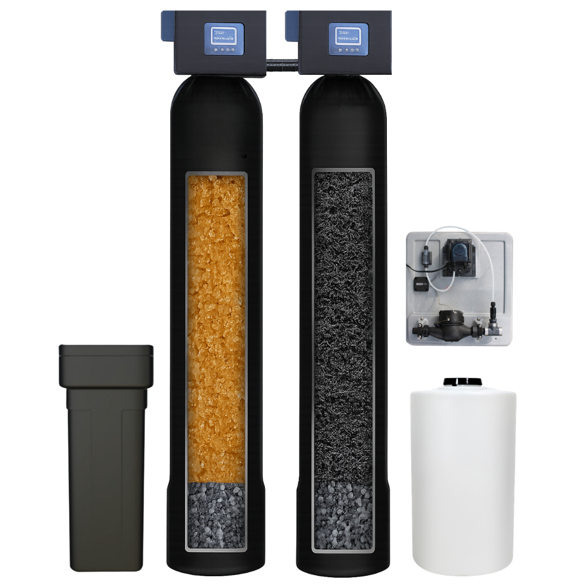

Complete Home System Package
A full-home water treatment solution built to improve water quality at the main point of entry, helping your entire home enjoy cleaner, softer water.
- Whole-home treatment
- Cleaner showers
- Better taste and smell
- Appliance protection